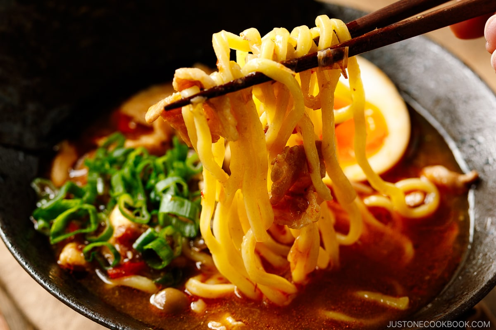

Fantastic Ramen

Do you love how delicious that ramen looks? Well, this recipe is for you!
Ours won't look that great or taste that great, but I do have your attention now.
So let's dive in.
Ingredients
- Packet of ramen you can get from the dollar store or wherever
- Water
- That's probably it.
How to make it
- Boil water on stove
- While the water is heating up, open the ramen packet
- Take out the seasoning packet
- Cut the seasoning packet open and set it down
- When water is ready, add it to the noodles
- Pour seasoning packet contents in container
- Wait for it to cool down and eat it up